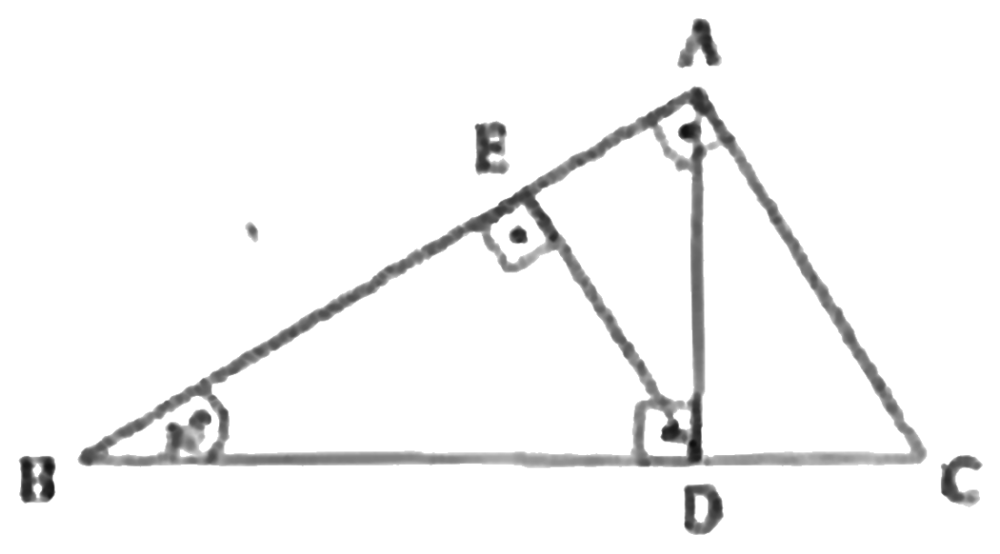

x הוא מספר תלת־ספרתי בו ספרת העשרות והמאות גדולות פי 4 מספרת האחדות.
מה מהבאים נכון בהכרח?
הצגת הפתרון
התשובה הסופית3תשובה (3)x מתחלק ב־9 ללא שארית
דרך הפתרון והסבר
ספרת אחדות u, ומאות ועשרות 4u ⇒ 441 או 882. סכומי הספרות 9 ו־18 ⇒ מתחלקים ב־9.
מוקשים נפוצים
441 אי־זוגי ו־882 זוגי – אין זוגיות קבועה.
נבדקהפתרון תואם את מפתח התשובות של הספר.
שאלה 5
20 חברי נבחרת האתלטיקה התחרו בריצת 2000 מטר. הממוצע הכללי של הנבחרת היה 184 שניות. זמן הריצה הממוצע (בשניות) של שמונת האצנים המצטיינים היה 181 שניות.
מה היה זמן הריצה הממוצע (בשניות) של שאר חברי הנבחרת?
הצגת הפתרון
התשובה הסופית4תשובה (4)186
דרך הפתרון והסבר
סך כל הזמנים 20 · 184 = 3680. השמונה: 8 · 181 = 1448. השאר: 223212 = 186.
מוקשים נפוצים
לחשב סכום כולל לפני שמחסירים.
נבדקהפתרון תואם את מפתח התשובות של הספר.
שאלה 6לבדיקה

בסרטוט שלפניכם משולש ABC. D ו־E נקודות על הצלעות BC ו־AB בהתאמה.
לאור נתונים אלו ונתוני הסרטוט, שטח טרפז EACDשטח משולש BED = ?
הצגת הפתרון
התשובה הסופית4תשובה (4)79⚠
דרך הפתרון והסבר
∢A = 90°, ∢B = 30°. נבחר BC = 4 ⇒ AB = 2√3, AC = 2, BD = AB·cos30° = 3. ב־△BED: DE = 1.5, BE = 1.5√3 ⇒ שטח 9√38. שטח ABC = 2√3 = 16√38. הטרפז = 7√38 ⇒ יחס 79.
מוקשים נפוצים
לבחור BC = 4 כדי לעבוד עם מספרים נוחים.
נבדקהפתרון תואם את מפתח התשובות של הספר.
שאלה 7
נתון: (√x − √y) · √x > (√x + √y) · √y , 0 < x, y
מה מהבאים יכול להיות ערכו של x?
הצגת הפתרון
התשובה הסופית4תשובה (4)כל התשובות לא יתכנו
דרך הפתרון והסבר
x − √xy > √xy + y ⇒ x − 2√xy − y > 0. עם t = √xy: t² − 2t − 1 > 0 ⇒ t > 1 + √2 ⇒ x > (3 + 2√2)y ≈ 5.8y. אף תשובה לא מתאימה.
מוקשים נפוצים
להגדיר t = √xy כדי לקבל משוואה ריבועית.
נבדקהפתרון תואם את מפתח התשובות של הספר.
שאלה 8לבדיקה
לניא קובייה הוגנת בת 6 פאות ועליה המספרים 1 עד 6. בשעה 8:00 בבוקר החל ניא להטיל את הקובייה, אחת לכל שעה עגולה ללא הפוגה במשך 24 שעות. איתן עבר לידו ב־14:00, ב־17:00 וב־22:00. מה הסיכוי שבשלושת הפעמים שעבר לידו ראה את אותה התוצאה בהטלת הקובייה?
הצגת הפתרון
התשובה הסופית2תשובה (2)(16)²
דרך הפתרון והסבר
ההטלה הראשונה כלשהי, ושתי הבאות צריכות להיות זהות לה: (16)².
מוקשים נפוצים
ההטלה הראשונה חופשית – (16)² ולא (16)³.
נבדקהפתרון תואם את מפתח התשובות של הספר.
שאלה 9
נתון: x הוא מספר שבעת חלוקתו ב־7 מתקבלת שארית 1. בהנחה ש־y הוא מספר טבעי, איזה מהביטויים הבאים אינו יכול להיות שווה ל־x?